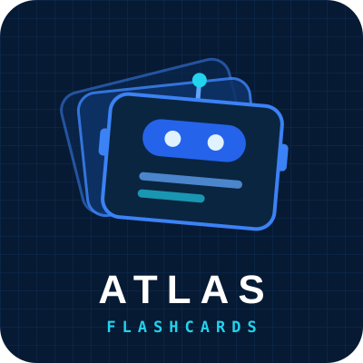

Projekty z modelami językowymi i agentami AI
ATLAS to seria projektów, które pokazują praktyczne zastosowania LLM: od pojedynczego agenta z lokalnym modelem, przez RAG, po systemy wieloagentowe i modele multimodalne. Każdy projekt działa i ma dokumentację z diagramami.
Zobacz projekty Kod na GitHubieProjekty
Każdy projekt to osobny folder w repozytorium, z kodem, testami i instrukcją uruchomienia.
 ● gotowy
● gotowy

ATLAS FlashcardsFiszki do nauki z własnych materiałów, generowane lokalnym modelem Qwen 2.5 przez Ollamę. Ocena jakości przez LLM-as-judge, wyjaśnienia z RAG, eksport do Anki.
Kolejny agent
Agent korzystający z narzędzi (tool calling) i pamięci. Szczegóły wkrótce.
System wieloagentowy
Kilku współpracujących agentów z orkiestracją. Szczegóły wkrótce.
Co pokazują te projekty
Umiejętności, które rozwijam w kolejnych projektach ATLAS.
Modele lokalne
Uruchamianie modeli przez Ollamę, dobór modelu do zadania i sprzętu, praca bez chmury.
Ustrukturyzowane wyjście
Schematy Pydantic przekazywane do modelu, walidacja odpowiedzi w formacie JSON.
RAG
Embeddingi, wyszukiwanie po znaczeniu i odpowiedzi oparte na źródłach z cytowaniem fragmentów.
Ocena jakości
LLM-as-judge, progi jakości, deduplikacja i testy jednostkowe z atrapą modelu.